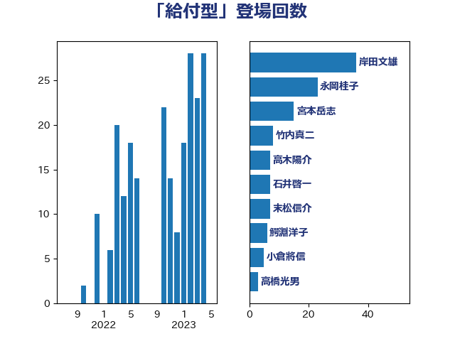

単語「給付型」

| 岸田文雄 | 自由民主党 | 36 回 |
| 永岡桂子 | 自由民主党 | 23 回 |
| 宮本岳志 | 日本共産党 | 15 回 |
| 竹内真二 | 公明党 | 8 回 |
| 高木陽介 | 公明党 | 7 回 |
| 石井啓一 | 公明党 | 7 回 |
| 末松信介 | 自由民主党 | 7 回 |
| 鰐淵洋子 | 公明党 | 6 回 |
| 小倉將信 | 自由民主党 | 5 回 |
| 高橋光男 | 公明党 | 3 回 |
| 赤羽一嘉 | 公明党 | 3 回 |
| 穂坂泰 | 自由民主党 | 3 回 |
| 玉木雄一郎 | 国民民主党 | 3 回 |
| 柳ヶ瀬裕文 | 日本維新の会 | 3 回 |
| 山添拓 | 日本共産党 | 3 回 |
| 宮本徹 | 日本共産党 | 3 回 |
| 宮口治子 | 立憲民主党 | 3 回 |
| 安江伸夫 | 公明党 | 3 回 |
| 城井崇 | 立憲民主党 | 3 回 |
| 国光あやの | 自由民主党 | 3 回 |
| 高木かおり | 日本維新の会 | 2 回 |
| 野田聖子 | 自由民主党 | 2 回 |
| 田村智子 | 日本共産党 | 2 回 |
| 牧義夫 | 立憲民主党 | 2 回 |
| 熊谷裕人 | 立憲民主党 | 2 回 |
| 深澤陽一 | 自由民主党 | 2 回 |
| 浮島智子 | 公明党 | 2 回 |
| 浅野哲 | 国民民主党 | 2 回 |
| 小宮山泰子 | 立憲民主党 | 2 回 |
| 吉田久美子 | 公明党 | 2 回 |
| 馬場伸幸 | 日本維新の会 | 1 回 |
| 道下大樹 | 立憲民主党 | 1 回 |
| 西岡秀子 | 国民民主党 | 1 回 |
| 自見はなこ | 自由民主党 | 1 回 |
| 紙智子 | 日本共産党 | 1 回 |
| 福山哲郎 | 立憲民主党 | 1 回 |
| 白石洋一 | 立憲民主党 | 1 回 |
| 渡辺創 | 立憲民主党 | 1 回 |
| 泉健太 | 立憲民主党 | 1 回 |
| 河西宏一 | 公明党 | 1 回 |
| 水野素子 | 立憲民主党 | 1 回 |
| 櫛渕万里 | れいわ新選組 | 1 回 |
| 横沢高徳 | 立憲民主党 | 1 回 |
| 森山浩行 | 立憲民主党 | 1 回 |
| 枝野幸男 | 立憲民主党 | 1 回 |
| 村田享子 | 立憲民主党 | 1 回 |
| 斎藤嘉隆 | 立憲民主党 | 1 回 |
| 後藤茂之 | 自由民主党 | 1 回 |
| 山崎正恭 | 公明党 | 1 回 |
| 吉良よし子 | 日本共産党 | 1 回 |
| 古屋範子 | 公明党 | 1 回 |
| 加藤勝信 | 自由民主党 | 1 回 |
| 倉林明子 | 日本共産党 | 1 回 |
| 住吉寛紀 | 日本維新の会 | 1 回 |
| 伊佐進一 | 公明党 | 1 回 |
| 井上貴博 | 自由民主党 | 1 回 |
| 中曽根康隆 | 自由民主党 | 1 回 |
| 三谷英弘 | 自由民主党 | 1 回 |